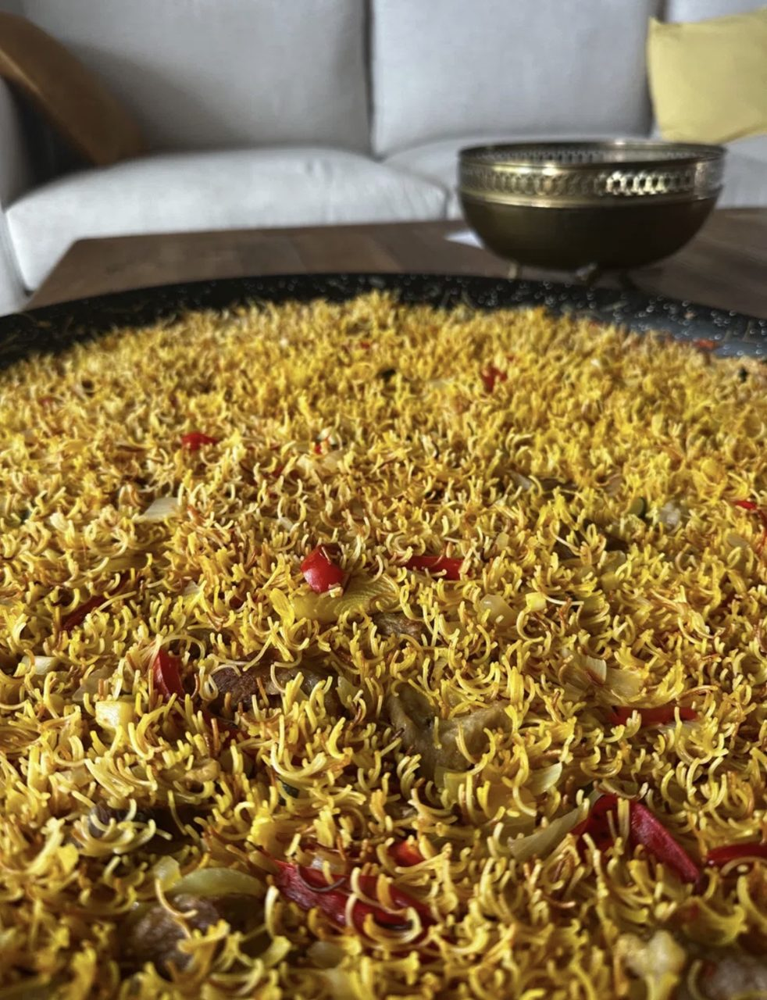
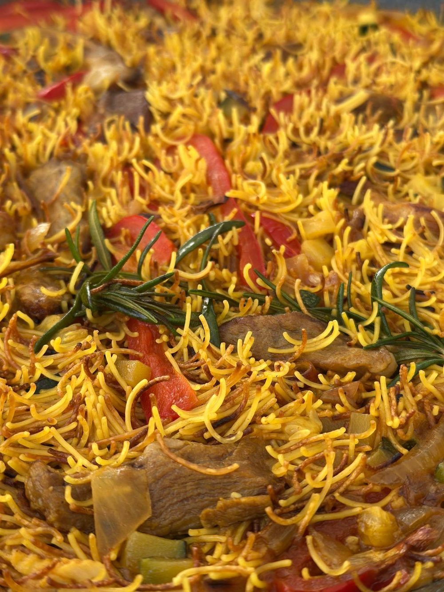

Comida tradicional
alicantina
‹ Todas las recetas
Fideuá de secreto ibérico


Ingredientes
200 g de secreto ibérico en tiritas
220 g de fideos cabello de ángel
⅓ cebolla picada
⅓ pimiento rojo pequeño
¼ calabacín en daditos
1 diente de ajo picado
½ tomate rallado
Pimentón
½ cucharadita rasa de "Preparado para Paella" Hacendado
500 ml de caldo de pollo
Aceite de oliva y sal
Opcional: alcachofa y una ramita de romero fresco
Preparación
Tostar los fideos.
En una sartén seca, a fuego medio-alto, tuesta los
fideos
hasta que tengan un color dorado avellana. Reserva.
Dorar el secreto.
A fuego fuerte, dora el
secreto
solo por una cara, hasta que quede dorado y caramelizado. Reserva.
El sofrito.
En la grasa del secreto echa un chorrito de
aceite de oliva
y sofríe la
cebolla
, el
ajo
, el
pimiento
y el
calabacín
. Añade el
tomate
.
El pimentón.
Añade el
pimentón
y mezcla.
El caldo.
Devuelve el secreto a la paella y añade el
caldo caliente
con la media cucharadita del
preparado para paella
.
Los fideos.
Deja hervir 10 minutos y después añade los
fideos tostados
. ¡Echa
sal
ahora, que si no luego queda soso!
Cocer y reposar.
Cuece 4–5 minutos a fuego medio-fuerte. Cuando falte un minuto, echa la ramita de
romero fresco
y apaga. Reposa 5 minutos.